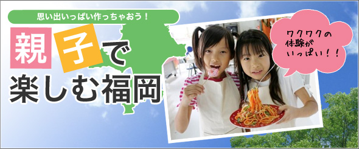
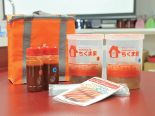
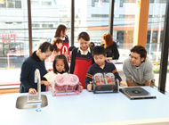
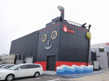
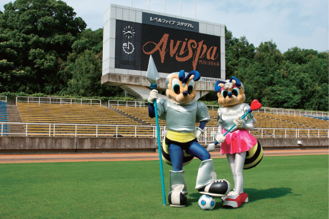
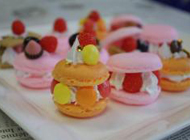
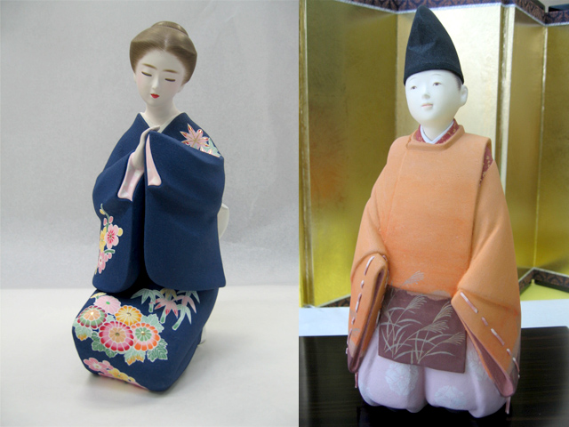
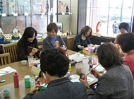

親子で楽しむ福岡 おすすめ体験プログラム
-
 ポイント１
クッキングスタジアム！
手作り明太子教室千曲屋クッキングスタジアムで、自分流の味付けで美味しい明太子を作って見ませんか？
明太子がどうやってできているのか、自分で「見て」「感じて」「作って」、２種類の明太子（350✕2）を作れる体験教室です！お茶碗・明太子を使った手作りレシピのプレゼント付き。手作り明太子教室（千曲屋）
所要時間 約60分 使用チケット枚数 2枚 営業時間 9:00~17:00 定休日 不定休 ご予約 前日までに予約
（092-434-2600）所在地 福岡県福岡市博多区東那珂2-7-20 アクセス ■天神より…「天神コア前」より100円循環バスに乗車、「博多駅」下車、以下に乗換え
■博多より…「博多バスターミナル12番のりば」より41番に乗車、「東那珂」下車、徒歩1分 -
ポイント2
アビスパ福岡 公式試合観戦
（ホーム自由席）福岡を本拠地とする「アビスパ福岡」の公式試合をお得に楽しめます。ゲーム日程・時間はホームページにて！http://www.avispa.co.jp/
レベルファイブスタジアム
所要時間 約120分 使用チケット枚数 1枚 営業時間 試合時間に準ずる 定休日 試合日のみ営業 ご予約 前日までに予約
（092-674-3020）所在地 福岡県福岡市博多区東平尾公園2-1-1 レベルファイブスタジアム アクセス ■天神より…「天神日銀前」より会場行き臨時バスに乗車、終点下車
■博多より…「博多バスターミナル14番のりば」より会場行き臨時バスに乗車、終点下車 -
ポイント3
食品サンプル作り体験
飲食店の店頭などに飾られている、本物の料理そっくりに再現された食品サンプル。蝋や樹脂を使ったサンプルは、とても緻密で中には本物以上に美味しそうなものも！サンプルづくり見学のほか、カラフルにデコレートされたスイーツサンプル作りを体験できます。
食品サンプル作り体験（サンプルRiki）
所要時間 約60分 使用チケット枚数 2枚 営業時間 10:00~・13:00~ 定休日 月～金(※土日祝のみ体験可) ご予約 前日までに予約
（092-567-0018）所在地 福岡県福岡市南区柏原4-20-30 アクセス ■天神より…「天神協和ビル前」より51番に乗車、「古野」下車、徒歩5分
■博多より…「博多駅前Dのりば」より67番に乗車、「古野」下車、徒歩5分 -
 ポイント4
博多人形絵付け体験
400余年の歴史を持ち、他に類を見ない博多独特の芸術味豊かな博多人形。福岡だけでなく、日本を代表する伝統工芸として世界的に名声を博しています。「松月堂」では、素焼き人形に自由に絵付けを楽しめます。店内に所狭しと並ぶ、700点以上もの博多人形は一見の価値あり！
博多人形絵付け体験（博多人形館 松月堂）
所要時間 約60分 使用チケット枚数 2枚 営業時間 9:00~16:00 定休日 年中無休 ご予約 前日までに予約
（092-291-4141）所在地 福岡県福岡市博多区中洲5丁目1‐22 アクセス ■天神より…「天神大和証券前」より1番に乗車、「東中州」下車、徒歩1分
■博多より…「博多バスターミナル3番のりば」より3番・100円循環バスに乗車、「東中州」下車、徒歩1分